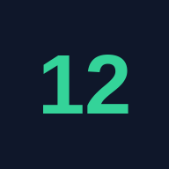

Os DozeTeste o app no seu Android
O app está em teste fechado no Google Play. Para instalar, faça os 2 passos abaixo, nessa ordem. Leva uns 2 minutos.
1 Entre no grupo de testadores
O grupo é o que libera o seu acesso ao teste.
- Toque no botão abaixo. Abre uma página do Google Grupos.
- Toque em "Participar do grupo" (ou "Ask to join group", se o seu Google estiver em inglês).
- Confirme com a conta Google certa e toque em Participar.
Se o grupo pedir aprovação, aguarde. Assim que for aceito, siga para o passo 2.
2 Aceite o convite do app
Agora diga ao Google Play que você quer testar.
- Toque no botão abaixo.
- Toque em "Tornar-se testador" (em inglês: Become a tester).
- Depois toque em "Baixar no Google Play" e instale o app como qualquer outro.
Dica: abra esse link pelo celular, na conta Google certa.
✓ Pronto: abra e entre com o Google
Abra o app Doze, entre com a sua conta Google e fique de olho nos check-ins diários. O teste dura 14 dias.
Abrir a versão no navegadorApareceu "o item não foi encontrado" ou a página do Play deu erro
Confirme que você entrou no grupo (passo 1) com a mesma conta da Play Store. Se acabou de entrar, espere alguns minutos (às vezes até 1 hora) e tente de novo.
O botão "Tornar-se testador" não aparece
Você está em uma conta que ainda não está no grupo, ou abriu o link no computador sem estar logado no Google. Entre na conta certa e abra de novo.
Como eu sei que deu certo?
Depois de aceitar o convite, a página do app no Google Play mostra o botão Instalar e a indicação de que você é testador.
Problemas? Chame no WhatsApp pelo portfólio: lpanissa.pages.dev.